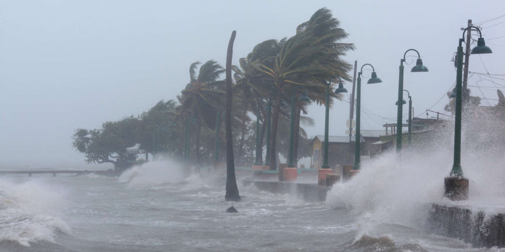

Ouragan de Sam
Ouragan Sam
En fin de journée, les vents constants qui gravitent autour du phénomène étaient estimés à 220 km/h et se faisaient sentir jusqu'à 30 km du centre, les vents de force tempête jusqu'à 225 km du centre. La pression atmosphérique est désormais de 943 Hpa, il se déplace à 17 km/h et à pris un cap Ouest/Nord-Ouest Km/h (290°). SAM devrait continuer de se déplacer lentement ce week-end et se tourner progressivement davantage vers le nord-ouest. Il aura alors toutes les conditions favorables à se maintenir en ouragan majeur et même à continuer de s'intensifier et s'élargir un peu.
Ouragan Sam
Même s'il faudra attendre encore les prochaines prévisions pour confirmer cela, la menace semble donc s’alléger pour Saint-Martin et Saint-Barthélemy en termes de risque cyclonique et d'impact direct. Pour la Guadeloupe le risque cyclonique diminue plus nettement, et devient vraiment très faible pour la Martinique. Toutefois à cette échéance on ne peut exclure totalement une menace plus directe sur ces îles du Nord de l'Arc, l’incertitude sur la position du système étant de l’ordre 350 km à 5 jours.
Image
